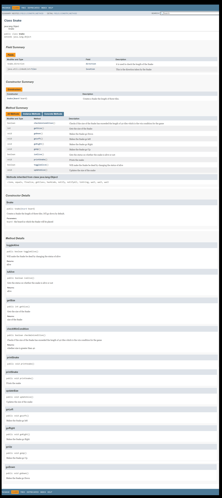
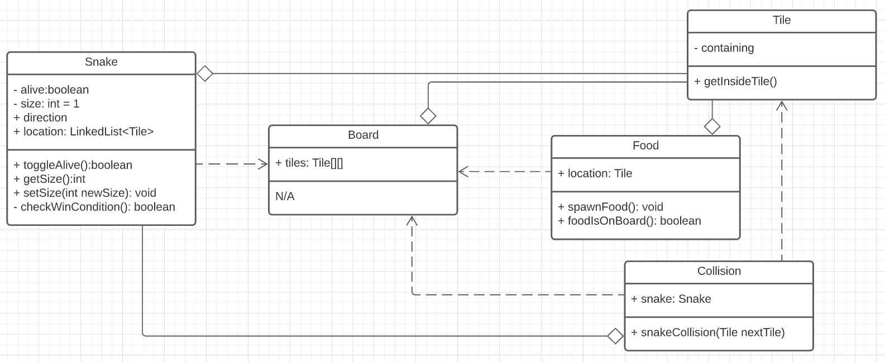

Snake Game Developed with the MVC Model in Java
In 2020, I participated in a Java project developing a basic snake game with 2 colleagues: Kenneth Tran and Jesus Emmanuel Fuentes Nava. The source code is structured with the MVC pattern (Model, Controller and View). As seen in the video above, the snake is structured with green squares that attach to each other as the snake grows and moves, and the red fruit remains a red square that randomly appears on the board (wherever the snake is not found).
If you would like to take a look at the source code of this project, please go to the following link: https://github.com/jefuentesnava/CS151_Project
Some of the key Java classes that made this project possible were Model, Controller, View, Board, Collision, Food, Snake, Tile, and Game. The win condition of the game is reached when the Snake's length reaches half the size of the board size. One of the things that were well done in this project, was the testing and documentation. We generated javadocs for every class. I could've uploaded them to this page to show, but because they are quite heavy, I will simply show how one of them looks like. Here's the Snake javadoc as an example:
In order to be succesfull in this project, Jesus, Kenneth and I met repeatedly to plan things out. Here's one of the intial UML diagrams we developed:
This was a fun project, and I am thankful for having worked with excellent developers, Manuel and Kenneth. If the project had lasted more than 8 weeks, we would have definitely worked on the aesthetics of the front-end, and perhaps add some cool graphics to the snake and the board. Nevertheless, the project was fun and I learned a lot.